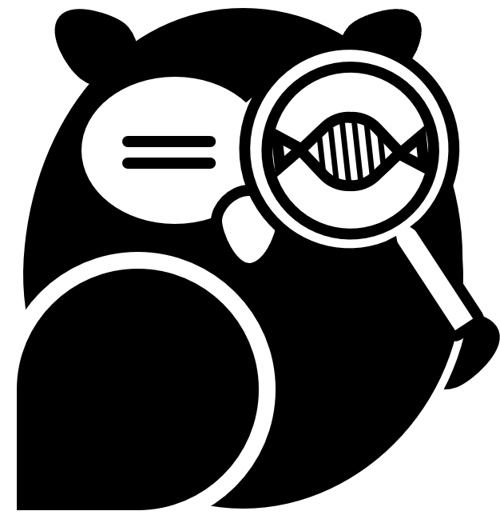

🧬 SAVE-OWL: Sequence Analyzer & Viewer Engine on the Web (Lite)

📊 ③ Mismatch Aggregator Dashboard
Downstream calculator processing automated codon metrics and frequency stacked visualizations.
Click 'Count and Plot Mismatches' to generate the Matplotlib-grade vector distribution graphic tracks...
This platform acts as an un-gated, client-side single-page application (SPA) designed for rapid batch sequence mutation analytics, population frequency compounding, and scalable vector graphics (SVG) generation. By implementing all algorithmic components directly in the browser runtime, it eliminates remote data transfers, preserving data privacy.

The platform supports multiple selection and drag-and-drop file inputs in both standard and multi-FASTA formats. Upon ingestion, sequence records are automatically parsed and appended to the tracking system cache.
- Batch Checkboxes: Act as a master cache repository. Checking or un-checking names updates the downstream analysis scope options.
- Textarea Editing (Critical Principle): The text boxes are the single source of truth for the alignment engine. Clicking "Apply Selection to Textbox" updates FASTA headers and sequence strings inside these text boxes. The backend algorithm will read and align exactly what is visible in these boxes when executed. Users can directly type, erase, or alter sequences inside these boxes before executing the analysis.
Clicking "Run Batch Alignment" starts the computation of a cross-pivot matrix between all items in the query box against all items in the reference box using a native matrix-instantiated Smith-Waterman (Local Alignment) algorithm.
- Strand Autodetection: For each individual query sequence, the system computes alignment scores for both the forward and reverse complement (RC) orientations. The orientation yielding the higher score is automatically selected.
- Reverse Complement Reporting Standardization: To ensure accurate profiling and aggregation of mismatches based on the reference coordinate system, if the RC orientation yields the higher score, the system automatically replaces the query sequence with its RC counterpart. Consequently, all subsequent mismatch and gap identifications are reported relative to this replaced RC sequence.
Any reference coordinates falling outside the aligned range (before the first aligned base or after the last aligned base) are masked with a light gray background labeled No Alignment Coverage. This visual aid allows you to immediately distinguish between a true sequence conservation and a simple lack of data coverage.
Clicking "Count and Plot Mismatches" analyzes mismatches within your selected reference gene or region. The tool automatically counts recurring mismatches across all samples and displays them in a stacked bar chart. Click "Download SVG" to download the chart data in the SVG format. Click "Download Mismatch CSV" to download the mismatch data and its codon translation impact (missense, nonsense, or silent). This features help you identify mismatch hotspots and view the distribution of mismatch types.
Checking "Enable Heterozygous Phase Analysis" and clicking "Run Batch Alignment" initiates a specialized dual-allele deconvolution pipeline designed to analyze complex heterozygous frameshift mutations (such as CRISPR-Cas9-induced indels) directly from raw chromatogram trace data.
- Anchor Sequence Selection: Users must input a clean, homozygous sequence block flanking the editing site (e.g., 15–25 bp) that is entirely free of mismatches. This acts as the primary coordinate probe.
- Bidirectional Slidewindow Probing: Based on the automated forward/reverse strand validation of your .ab1 file, the system dynamically sweeps an internal 20-mer sliding k-mer probe (secondary probe) upstream (for reverse complement orientations) or downstream (for forward orientations) to calculate the precise structural boundaries where trace harmony ruptures and returns.
- Dual-Allele Unmixing: Once the phase rupture boundaries are locked, the engine unmixes the overlapping chromatogram traces, isolating individual target variants into distinct Allele A and Allele B sequence tracks.
- Reference-Centric Grid Viewer: Clicking "Generate Multiple Sequence Alignment (MSA)" bypasses traditional gap-scattering progressive algorithms. It projects all isolated alleles onto a unified, absolute reference coordinate system. Samples possessing mutations or insertions relative to the reference sequence flag their track names in red labels, while perfect matches remain muted.